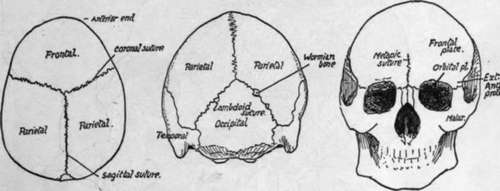

Cranial Bones
Description
This section is from the book "The Anatomy Of The Human Skeleton", by J. Ernest Frazer. Also available from Amazon: The anatomy of the human skeleton.
Cranial Bones
Examine the skull from above (Fig. 159). We perceive that the front part is formed by a single bone, the frontal, behind which are the parietal bones, right arid left, placed therefore laterally and above, and also markedly on the posterior aspect of the curved skull. The fronto-parietal suture is also termed coronal, while the interparietal suture being in the middle line and running from before backwards, is usually termed the sagittal suture : observe that these sutures are very serrated.
Now turn to the posterior aspect of the skull (norma occipitalis) (Fig. 159), and see that another bone, the occipital, comes up in a point between the two parietals, so that the sagittal suture becomes continuous with two parieto-occipital sutures: these two together constitute the lambdoid suture, so termed on account of the figure formed by them. Small additional ossicles, known as Wormian bones, are frequently found in this suture, as also in many others in the skull, and may in exceptional cases number some hundreds : they are due to accessory centres of ossification occurring where the normal centres have failed to meet and form a normal suture.
Now look at the front of the skull (norma frontalis), and observe that the frontal bone alone forms this wall of the cranial cavity. It comes down to make the upper margins of the openings of the orbits, and turns back here to form the greater part of each roof of these cavities, so that the bone may be said to possess two orbital plates in the roof of the orbit, in addition to the large frontal plate. There is often a suggestion of a suture, more or less complete, running up the frontal plate in the middle line, starting at the root of the nose ; this is termed the metopic suture, and is an indication of the fact that the bone develops in two halves which subsequently fuse. The facial bones, which form the floor of the orbits, come up to articulate with the frontal at each side of the openings of .these cavities, so that the frontal bone affords support to the bones of the face : the external column of support is the prominent external angular process of the frontal.
* In skulls from subjects of advanced years the sutures are frequently obliterated in part or altogether.
Fig. 159.-Norma verticalis. Norma occipitalis. Norma frontalis.
We can now appreciate the position of the bones seen on the lateral aspect of the skull (Fig. 160).
Looking at it from the side, we see that the lower border of the parietal bone articulates along a curved suture with a plate of bone that is part of the temporal bone, known as the squama, or squamous portion of the temporal, and from the lower part of this an arched process extends forward to join a corresponding backward extension from one of the face bones. The arch made in this way is the zygomatic arch, and the temporal process is the zygomatic process, or zygoma. The temporal articulates with the whole extent of the lower border of the parietal, tracing it backwards, thus reaching the end of the lambdoid suture, where it comes into relation with the occipital bone, and the suture between the two turns on to the base of the skull. The back and lower part of the temporal, articulating with the back part of the lower border of the parietal, is easily distinguished by its appearance from the squama, and is continued down as a blunt projection, the mastoid process.

Fig. 160.-Skull from the side without lower jaw. The stippled part is the temporal fossa. The inferior temporal crest is under cover of the zygoma.
In front of the temporal another bone is seen separating the squama from the frontal and articulating above with the lower front angle of the parietal: this is the outer surface of the great wing of the sphenoid.
The sphenoid is a bone that properly belongs to the base of the skull, where it has a body that lies centrally, but two pairs of " wings " project out from this body, and of these the greater wings form part of the skull base out to the sides, and a\so help in forming part of the side walls : here each wing articulates with the squama behind, the parietal above, the frontal above and in front, and below this with one of the face bones, the malar. The malar is the bone at the outer side of the orbit which we have seen articulating with the external angular process of the frontal above and with the zygomatic process of the temporal externally and behind. If we look inside the orbit we can see the malar articulating with the frontal above, and, below this, by its posterior border, with the great wing of the sphenoid, but this is the orbital surface of the great wing.
Looking at the side of the skull as a whole, we can see that a large part of it is depressed, deep to the level of the zygomatic arch, forming the temporal fossa. The floor of this fossa is made by the squama, great wing ot sphenoid, lower part of parietal, and, in front, a small part of the frontal and malar.
The fossa contains the temporal muscle, which arises from its floor, and it is limited above by the superior temporal crest which forms an indefinite curved roughness on the parietal, passes from this on to the frontal, where it becomes a prominent ridge leading to the external angular process, and from this passes on to the sharp margin of the malar.
At about the level of the zygoma the floor of the temporal fossa is found to become abruptly continuous with the base of the skull, forming a sharp border, the inferior temporal crest: the tendon of the temporal muscle passes between this crest and the zygoma to reach the lower jaw.
If we trace the zygoma back we find that a slightly curved ridge, the upper root of the zygoma, can be followed along the lower and back part of the squama, where it forms a lower boundary of the temporal fossa. Below the root of the zygoma, and just in front of the mastoid process, is the opening of the ear, the external auditory meatus, and the lower jaw articulates with the under surface of the bone just in front of this.
Continue to: